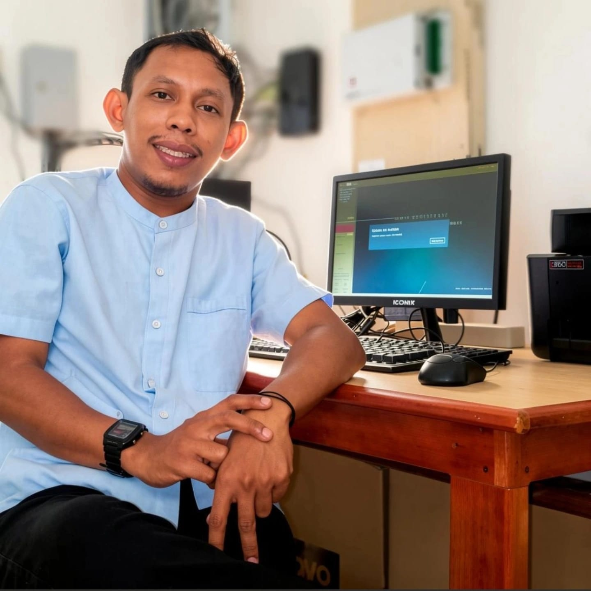

<!-- Profile widget: place this snippet where your profile photo should appear (e.g., replace existing ) -->
<div class="profile-widget" id="profileWidget">
  <div class="profile-media">
    <picture id="profilePicture">
      <!-- Modern formats first -->
      <source type="image/avif" srcset="assets/profile/me-320.avif 320w, assets/profile/me-640.avif 640w, assets/profile/me-1280.avif 1280w" sizes="(max-width: 420px) 96px, (max-width:768px) 110px, 140px">
      <source type="image/webp" srcset="assets/profile/me-320.webp 320w, assets/profile/me-640.webp 640w, assets/profile/me-1280.webp 1280w" sizes="(max-width: 420px) 96px, (max-width:768px) 110px, 140px">
      <!-- LQIP tiny placeholder as starting src -->
      
    </picture>

    <span class="profile-status" aria-hidden="true" title="Online"></span>
  </div>

  <div class="profile-actions">
    <button id="uploadBtn" class="btn small">Unggah Foto</button>
    <button id="cameraBtn" class="btn small">Ambil Foto</button>
    <input id="fileInput" type="file" accept="image/*" style="display:none">
  </div>
</div>
